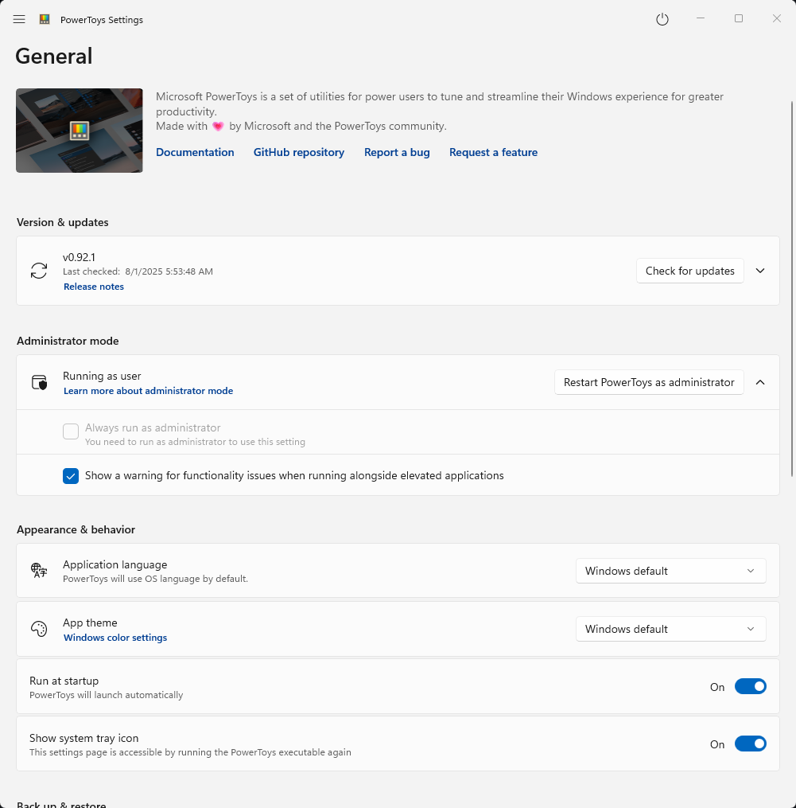

General settings for PowerToys

The General settings section of Microsoft PowerToys allows you to configure essential app behaviors including updates, administrator permissions, appearance themes, and startup options. These settings help you customize your PowerToys experience to match your Windows workflow preferences.
Version & updates
Here you can check for new updates, and if one is available, you can download and install it. You can also indicate whether updates should be downloaded automatically, if you want to be notified about new releases, and if the release notes should be displayed after an update.
Administrator mode
Read more about the administrator mode in the PowerToys running with administrator permissions section of the documentation.
Appearance & behavior
Application language
PowerToys will use the language of your Windows installation. If you want to change the language, you can select a different one from the dropdown menu. The change will take effect after you restart PowerToys.
App theme
Here you can set the theme of the PowerToys settings app and the PowerToys flyout: Dark, Light, or Windows default.
Run at startup
If activated, PowerToys will start automatically when you log in to Windows.
Show system tray icon
When activated, PowerToys shows an icon in the system tray area of the taskbar. You can use this icon to open the PowerToys settings app or the PowerToys flyout.
Back up & restore
Set a location where you want to save your PowerToys settings. You can also restore your settings from an existing backup.
Experimentation
Will activate experimentation with new features on Windows Insider builds, if available.
Diagnostics & feedback
Here you can enable or disable the collection of diagnostic data, which helps the PowerToys team to improve the app. You can also generate a bug report package to send to the PowerToys team and view your diagnostic data.
Install PowerToys
This utility is part of the Microsoft PowerToys utilities for power users. It provides a set of useful utilities to tune and streamline your Windows experience for greater productivity. To install PowerToys, see Installing PowerToys.